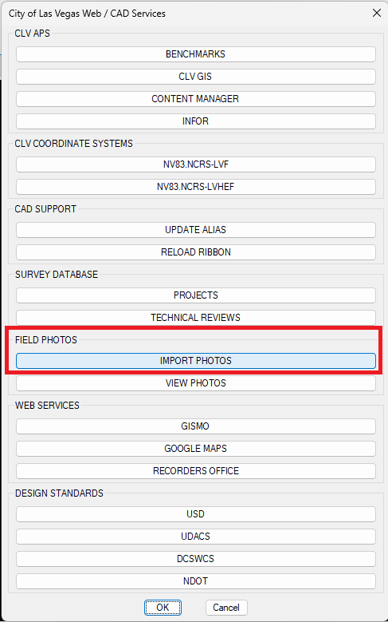
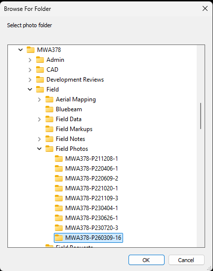
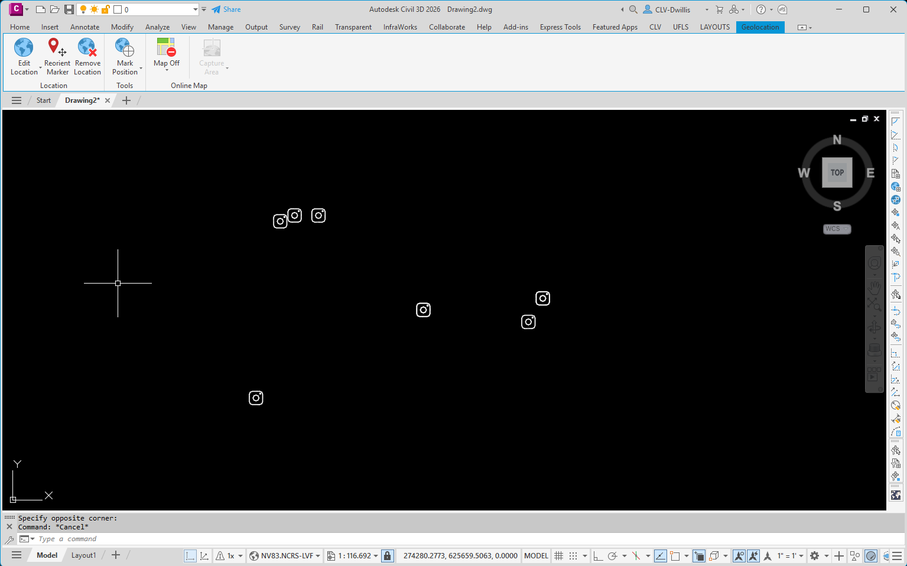

IMPORT PHOTOS
Imports geotagged field photos and places photo marker blocks in the drawing at the photo locations.
Result: A photo marker is inserted for each imported geotagged image. The markers can be selected later with VIEW PHOTOS to review the original photo, metadata, and map location.
Basic Use
- Open the CLV menu and select IMPORT PHOTOS under FIELD PHOTOS.
- Browse to the project photo folder and click OK.
- Review the inserted photo marker blocks in the drawing.



Notes
- The source photos must contain location information for the tool to place markers correctly.
- Photo markers are used by the VIEW PHOTOS tool. Keep the source image folder available so the viewer can open the original image file.
- If markers do not appear where expected, confirm the drawing coordinate system and verify that the photos contain GPS metadata.